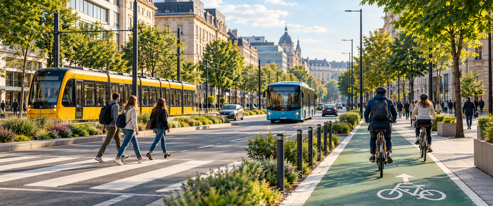

Fenntartható közlekedés a városban

A városi közlekedés mindennapjaink része. Nem mindegy azonban, hogy egy rövid utazáshoz autót, közösségi közlekedést, kerékpárt vagy gyaloglást választunk.
A tudatos közlekedési döntés csökkentheti a forgalmat, a zajt és a levegő szennyezését.
Milyen lehetőségeink vannak?
- A villamos és az autóbusz egyszerre sok embert tud szállítani.
- A kerékpár rövid és közepes távolságon gyors megoldás lehet.
- A gyaloglás rövid utaknál egyszerű és egészséges választás.
Reggeli közlekedési lehetőségek
| Közlekedési mód | Indulás | Menetidő |
|---|---|---|
| Villamos | 7:05 | 24 perc |
| Autóbusz | 7:12 | 31 perc |
| Kerékpár | bármikor | 28 perc |
Biztonságos közlekedés
Mindig figyeljünk a többi közlekedőre, tartsuk be a szabályokat, és sötétben gondoskodjunk a megfelelő láthatóságról.